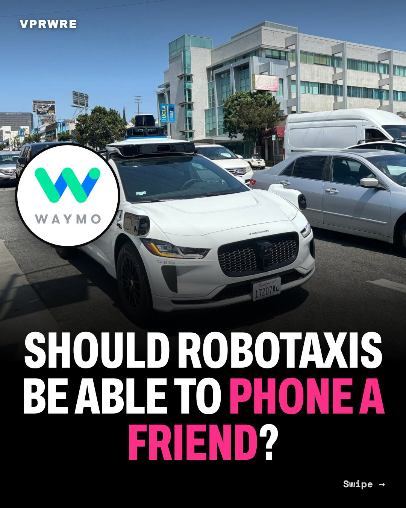

Policy
Should robotaxis be able to phone a friend?
Waymo’s robotaxis have a lifeline: when they need help, they phone a friend.

That’s how Waymo’s safety chief described it to the U.S. Senate in February. Remote workers, some in the Philippines, guide its cars. “They do not remotely drive the vehicles.”
Now Minneapolis wants the friend in the front seat. On Oct 1, the City Council voted 7–6 to require a paid human in the driver’s seat of every robotaxi. Its authors say it protects Minnesota’s roughly 10,000 rideshare drivers. Waymo calls it “a de facto ban.”
The twist: a blind rider told the council a rideshare driver saw her, drove away and canceled. Mayor Jacob Frey vetoed the rule on Oct 2, citing riders like her. IIHS found Waymo’s driverless cars had a 68% lower crash-involvement rate than human drivers, under more limited conditions.
It’s not over: an override needs 9 of 13 votes.
Our take: protect drivers, not the seat. Make robotaxis fund the switch with a per-ride fee for drivers’ retraining and income.
Should your robotaxi call a friend, or carry one?
The carousel
12 slides · Open on Instagram
Disclosure: VPRWRE drafts with Claude, Anthropic’s AI.